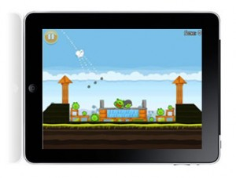

Desarrollo de aplicaciones multiplataforma
Ciclo Superior
Desarrollar, implantar, documentar y mantener aplicaciones informáticas multiplataforma, utilizando tecnologías y entornos de desarrollo específicos, garantizando el acceso a los datos de forma segura y cumpliendo los criterios de «usabilidad» y calidad exigidas en los estándares establecidos.

- Lenguajes de marcas y sistemas de gestión de información
- Sistemas informáticos
- Bases de Datos
- Programación
- Acceso a datos
- Entornos de desarrollo
- Desarrollo de interfaces
- Programación multimedia y dispositivos móviles
- Programación de servicios y procesos
- Sistemas de gestión empresarial
- Proyecto de desarrollo de aplicaciones multiplataforma
- Formación y Orientación Laboral
- Empresa e iniciativa emprendedora
- Formación en centros de trabajo (F.C.T)
- Lengua extranjera del entorno profesional: Inglés 1 y 2
Puestos de trabajo más relavantes:
- Desarrollar aplicaciones informáticas para la gestión empresarial y de negocio
- Desarrollar aplicaciones informáticas de propósito general
- Desarrollar aplicaciones en el ámbito del entretenimiento y la informática móvil.